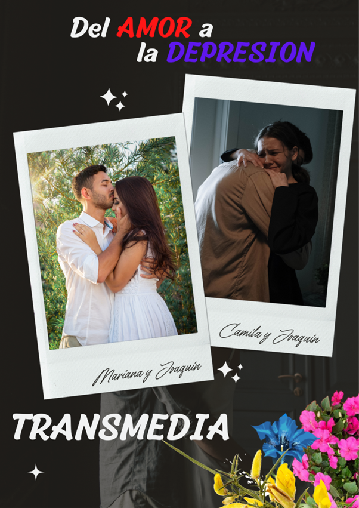

DEL AMOR A LA DEPRESION
Esta pieza audiovisual nace como producto fílmico de WORK SQUAD para la campaña en el Perú por el Día Mundial de la Prevención del Suicidio de la OMS, junto con la colaboración de la UNIVERSIDAD PRIVADA DEL NORTE y el grupo de teatro LUNAY CLOWN.

El propósito del cortometraje va de la mano con el objetivo de la OMS, el cual es la concientización de la depresión como causa principal del suicidio. Además, el contribuir con fundaciones que tengan por principal objetivo el fomento, desarrollo y ayuda a las personas que padecen depresión.
El proyecto considera estratégico potenciar el vínculo entre la OMS y Hospitales Nacionales del Perú y concientizar a que dichas entidades puedan brindar un servicio gratuito y de calidad para las personas con bajos recursos.
Esta producción aprovecha las capacidades creativas e innovadoras de Spotify y con su plataforma y se crea un podcast dónde psicólogos voluntarios compartan palabras de aliento para las personas que sufran dicha condición en una narración breve de 2 minutos.